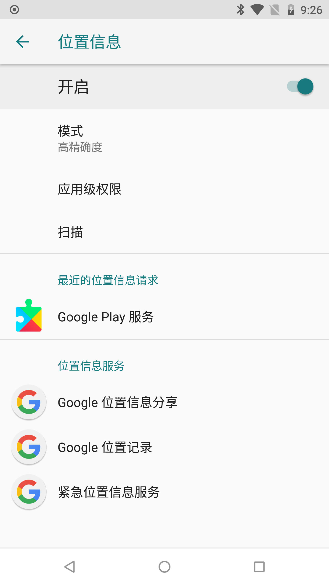

Permission 问题处理
由于Android上的Miracast功能强依赖Wi-Fi P2P，因此这个过程中也会依赖其相应的权限。经过调试及踩坑，主要会涉及到以下几个权限问题。
以下分析过程中涉及到的源码版本为
android-8.1.0_r60
WFD Permission
自Android 8.0及以后，官方已经限制了对setWFDInfo()接口的调用（这个接口本来也是@hide的，因此官方在高版本中对其进行限制也是理所当然），普通app已经没有权限进行调用了，也就是第三方app已经不能实现Sink端了。所以市面上的一些投屏软件，如：AirScreen，在高版本中会弹窗提示功能已被Google禁用。除非你是系统应用或者有系统签名才能突破此限制，此时你会收到类似如下的报错：Wifi Display Permission denied for uid = 10104
1 | W/System.err: java.lang.reflect.InvocationTargetException |
我们来跟下源码，看下官方究竟做了什么，首先直接查看WifiP2pManager的setWFDInfo()方法。我们可以看到在sendMessage()发送通知前，增加了checkConfigureWifiDisplayPermission()的权限校验：
1 | /** @hide */ |
其中mService为IWifiP2pManager类型的Binder接口，通过IPC的形式最终调用到WifiP2pServiceImpl中，我们直接查看该方法实现。可以看到增加了对android.Manifest.permission.CONFIGURE_WIFI_DISPLAY权限的校验，而此权限仅向系统应用开放。
1 | public class WifiP2pServiceImpl extends IWifiP2pManager.Stub { |
因此在Android 8.0之后，第三方应用程序已经无法实现Sink接收端。如果你是厂商App，应用有系统权限，则可以绕过此限制。或者找厂商修改frameworks源码，增加app白名单开放此权限，也可以绕过，具体可在getWfdPermission()方法中增加过滤判断，然后返回true即可。
Denied: no location permission
在绕过了上述的WFD Permission权限之后，你可能还会遇到坑。具体的现象就是，调用WifiP2pManager的requestPeers()或者requestGroupInfo()方法的时候，可能会返回空的peers列表。毕竟在Sink与Source端建好组后，是需要通过这些接口来获取P2P对等设备，进而建立RTSP连接的。如果你忘记了这几个函数的用法与场景，可以回看《Miracast技术详解（一）：Wi-Fi Display》这篇文章。刚开始遇到这个问题你可能会一脸懵逼，但是细心的同学可能会发现Logcat中会打印这么一句（不要过滤当前进程log，要查看全局log）：
1 | D/WifiPermissionsUtil: Denied: no location permission |
我们可以从这句Logcat报错作为一个源头，查找为何没有生效。正常情况下，按照文章《Miracast技术详解（一）：Wi-Fi Display》的操作方法，应该能完整的实现Sink端的设备发现及RTSP连接的准备工作了。我们首先从上述调用异常的方法requestPeers()源码看起：
1 | /** |
其中通过sendMessage()发送通知，并最终回调到WifiP2pServiceImpl的P2pStateMachine.DefaultState中进行处理：
1 | ... |
我们继续查看getPeers()方法的内部实现，终于看到了与Logcat中报错相关的WifiPermissionsUtil方法调用，由此可以猜测，应该是某些权限的校验失败了，导致获取不了扫描结果。
1 | /** |
继续深入canAccessScanResults()方法内部源码，查看到底哪里出问题，此时终于找到了与Logcat中吻合的异常输出Denied: no location permission，由此可以判断canCallingUidAccessLocation和canAppPackageUseLocation属性都为false导致。由于涉及case过多，为了提高排查效率，我们可以打印出相关的boolean变量进行排查。有条件的同学可以通过修改frameworks源码增加log打印的方式进行，或通过一些hook框架，获取上面相关变量的值。
1 | /** |
首先查看checkCallerHasPeersMacAddressPermission()方法，由于此权限PEERS_MAC_ADDRESS仅授权给系统应用，因此一般第三方app这里直接就返回false了。
1 | /** |
然后是isCallerActiveNwScorer()方法，看注释应该是判断调用方app是否是“网络评分器”(google翻译过来)，感觉一般app也是会返回false。因此canCallingUidAccessLocation这个case，应该就是false了。
1 | /** |
我们继续来分析isLegacyForeground()方法，这里在上层getPeers()传入的version为Build.VERSION_CODES.O，由于我们程序的targetSdkVersion大于26，因此这个条件的值也是false了。
1 | private boolean isLegacyForeground(String pkgName, int version) { |
分析到这里，唯一的答案只能是isLocationModeEnabled()与checkCallersLocationPermission()同时为true，变量canAppPackageUseLocation才可能为true，才不会走到报错的逻辑中。因此，在程序运行的过程中，两者其一为false都将导致Denied: no location permission的报错。接下来，我们来详细分析下这两个case，如何才能保证其值为true。
LocationMode
关于LocationMode，在Android设置中，我们可以找到“位置信息”这个服务。如果将此模式关闭，则方法返回Settings.Secure.LOCATION_MODE_OFF。开启的情况下，有可能为以下几个值，分别对应：仅限设备、低耗电量和高精确度：
1 | /** |

我们可以通过Settings.Secure.getInt()来获取LocationMode的开启状态，以及当前所处的模式，详见以下代码：
1 | private boolean isLocationModeEnabled(String pkgName) { |
因此，这里我们可以得出一个结论，若系统关闭了LocationMode，则isLocationModeEnabled()返回值为false，上层调用会失效，报Denied: no location permission错误，这里我们需要友好的提示用户手动进行开启。
ACCESS_FINE_LOCATION Permission
还记得在文章《Miracast技术详解（一）：Wi-Fi Display》中，我们已经在Manifest中按照官方实现声明了ACCESS_FINE_LOCATION权限，关于ACCESS_COARSE_LOCATION与它的关系，只要授权了ACCESS_FINE_LOCATION权限，则默认包含了后者，可理解为包含的关系，详见stackoverflow上的这个解答。那checkCallersLocationPermission()这个case的意图就很明显了，就是检测我们的app是否进行了ACCESS_FINE_LOCATION的授权。
1 | /** |
这里关键，是在程序中要处理好动态授权与授权异常的提示，若用户不授予ACCESS_FINE_LOCATION权限，上层逻辑是会受到极大影响的，而且这个报错还不那么明显。通过checkSelfPermission()及requestPermissions()方法，我们可以很简单就能完成权限检测及动态授权，详见以下示例：
1 | private boolean checkPermissions() { |
在最终确保LocationMode处于开启以及动态授权ACCESS_FINE_LOCATION成功后，变量canAppPackageUseLocation才可能为true，此时才不会报Denied: no location permission错误，上层调用WifiP2pManager的requestPeers()或者requestGroupInfo()方法才能正常返回结果。写到这里，基本上实现Sink端会遇到的权限问题都讲解完了，希望大家不要再踩坑哈。